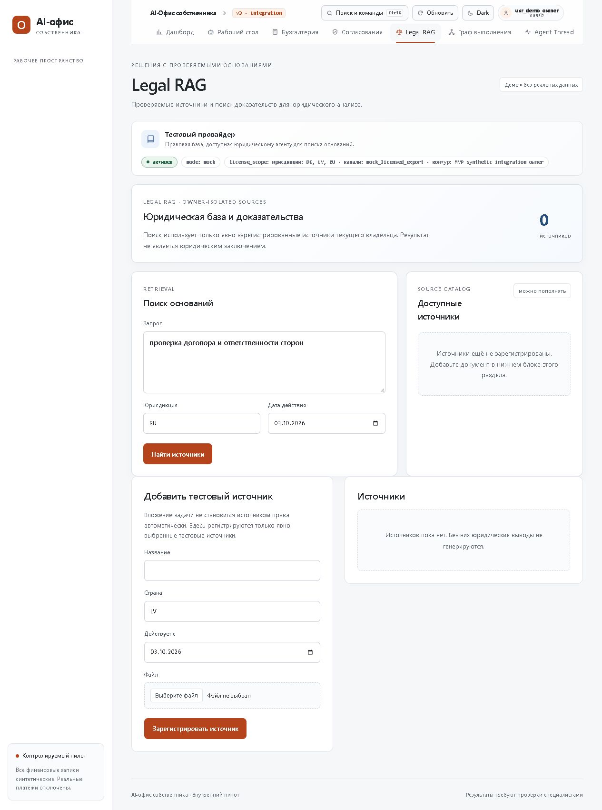

04 / Business Automation
Автоматизация бизнес-процессов
Связать обращения, документы и действия команды.
Автоматизация для небольших компаний: приём заявок, CRM, коммерческие предложения и помощники по внутренним документам. Начинаем с одного измеримого процесса.
Задачи бизнеса
Где можно убрать рутину
Статус обращения приходится уточнять у коллег.
Подготовка документов и поиск информации занимают время.
Проекты и применение
Основа уже есть
Ниже — возможности моих проектов и то, как их можно адаптировать под ваш процесс. Подключение данных и сервисов компании входит в отдельную настройку.
01
CRM коммерческой организации
Контакты, статусы и ответственные
Что есть в проекте
Реализованы авторизация, список лидов, контакты, статусы и разделение доступа менеджера и администратора.
Как применить в компании
Добавить нужные поля и связать CRM с источниками обращений через API или n8n. Проверить доступ каждой роли и передачу заявки.
02
Генератор КП
Документ по данным сделки
Что есть в проекте
Веб-сервис генерирует текст предложения, собирает PDF и хранит историю.
Как применить в компании
Применить фирменный шаблон и подтверждённые данные сделки. Согласование менеджером включить перед отправкой клиенту.
03
AI-офис собственника
Контролируемая работа с документами
Что есть в проекте
Локальный интегрированный пилот: юридическая база знаний, правила согласования, журнал решений и изоляция компаний. Используются синтетические финансовые данные.
Как применить в компании
Выбрать один сценарий анализа документов. Перед внедрением проверить источники, доступы и качество ответов; реальные платежи и промышленная интеграция с 1С в пилоте отсутствуют.
04
RAG-ассистент
Поиск по внутренним инструкциям
Что есть в проекте
Реализованы индексация документов, векторный поиск и ответ на основе найденного контекста.
Как применить в компании
Загрузить регламенты компании, согласовать доступ и контрольные вопросы. Если подтверждения в документах нет, направлять запрос ответственному.
Первый шаг
Начать с приёма и распределения обращений
На основе моего сценария n8n: Webhook → AI-классификация → NocoDB → уведомление в Telegram. Для компании настраиваем категории, отделы и обработку ошибок; проверяем обычное, пустое и нестандартное обращение.
- Что понадобится
- Описание текущего процесса, 10–20 обезличенных примеров и список сервисов, между которыми переносят данные.
- Что измерим
- Время ручной обработки, полнота записей, правильность маршрутизации и количество ошибок.
Из портфолио
AI-офис собственника
Пример интерфейса исходного проекта. Отраслевые сценарии и подключения обсуждаем под ваши данные.

Обсудим процесс
С чего начать в вашей компании?
Напишите, где сейчас возникает ручная работа и какие сервисы вы используете. Я предложу первый сценарий и состав работ; сроки и стоимость согласуем после разбора задачи.